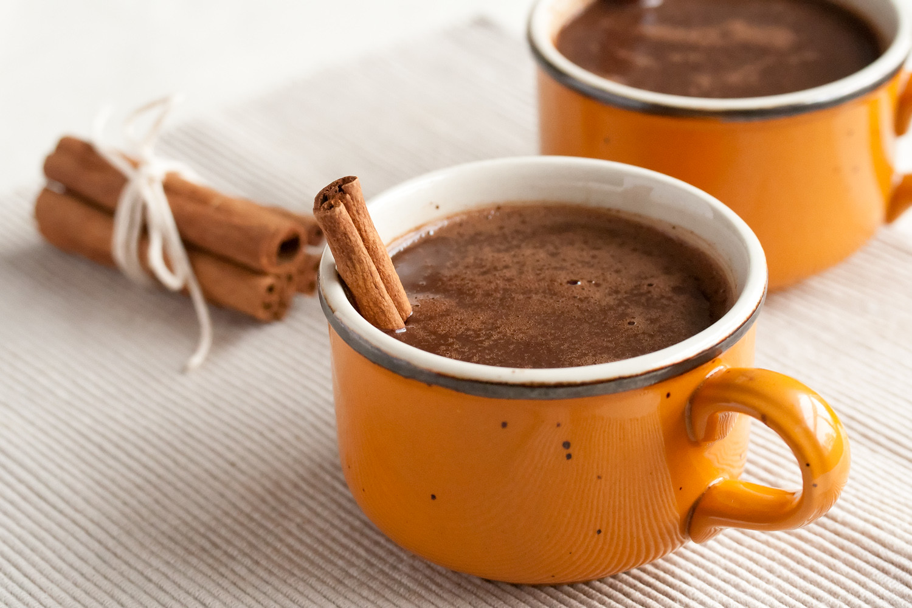

Mexican Hot Chocolate

Description
Perfect for the winter weather. A spicy, warm, rich and robust Mexican Hot Chocolate.
Ingredients
- 2 cups milk
- 2 tablespoons unsweetened cocoa powder
- 2 tablespoons granulated sugar
- 1/2 teaspoon ground cinnamon
- 1/4 teaspoon vanilla extract
- 1/8 teaspoon chili powder
- 1/8 teaspoon ground cayenne* (optional)
- 1 oz bittersweet chocolate
Steps
- In a medium saucepan over medium-high heat, add milk, cocoa powder, sugar, cinnamon, vanilla extract, chili powder, cayenne pepper (if desired).
- Mix together with a whisk, add the bittersweet chocolate and heat until the chocolate has completely melted and the mixture is hot, but not boiling.
- Divide hot chocolate into 2 mugs and serve with marshmallows, chocolate shavings and a cinnamon stick.